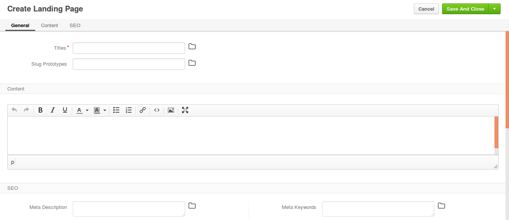

Create a Landing Page¶
To create a new Landing Page:
Navigate to Marketing > Landing Pages in the main menu.
Click Create Landing Page. The following page opens:
Fill in the landing page title (Titles) and translate it into the languages supported in your OroCommerce configuration.
To manage title translations, click next to the Titles box and follow the guidance here).
Click on the Slug Prototypes box. The default slug prototype will be autogenerated. Edit the value to customize the default.
To ensure that slug prototype translation is localization-friendly, manage slug prototype translations: click next to the Slug Prototypes box and follow the guidance here).
Enter the landing page content in the WYSIWYG text editor or use the source code mode (<>) to enter the html code.
In the SEO section, manage the meta description and meta keywords that will be incapsulated in the landing page.
Meta information helps search engines index and display the landing page in the search results when it becomes relevant.
Meta description would summarize the page contents in one or several sentences (~160 characters).
Meta keywords are comma separated words and phrases that describes the content in the most precise and relevant way that help find the page via the search engines (e.g. Google, Yahoo, Bing, etc.)
Once you have completed editing the new landing page details, click Save on the top right of the page.
The new landing page is created and is available by the following URL:
1 | <OroCommerce application URL>/<slug prototype>/
|
For example, http://acme.orocommerce.com/online-webinar-jan2017/
Next steps
Use the landing page URL in your marketing activities (email campaigns, advertisement, etc).